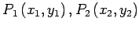
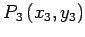
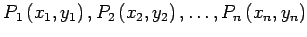

Inhalt Index DeskTop Bronstein

 Geometrie Vektoralgebra und analytische Geometrie Analytische Geometrie der Ebene Spezielle Punkte in der Ebene
Geometrie Vektoralgebra und analytische Geometrie Analytische Geometrie der Ebene Spezielle Punkte in der Ebene


Sind die Eckpunkte durch  und  gegeben, dann ergibt sich der Flächeninhalt gemäß
Drei Punkte liegen auf einer Geraden, wenn gilt:
Sind die Eckpunkte durch  gegeben, dann ist
Die Formeln (3.319) und diese liefern einen positiven Flächeninhalt, wenn die Eckpunkte in einer Reihenfolge durchnumeriert sind, die dem entgegengesetzten Drehsinn des Uhrzeigers entspricht. Anderenfalls ist der Flächeninhalt negativ.